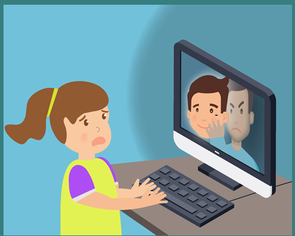
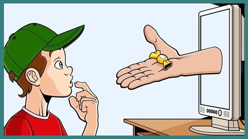
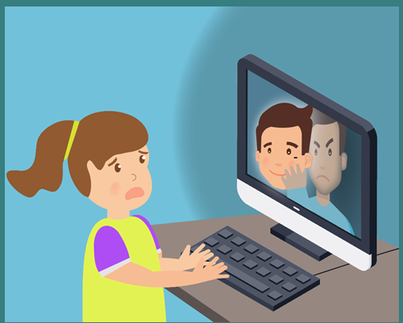
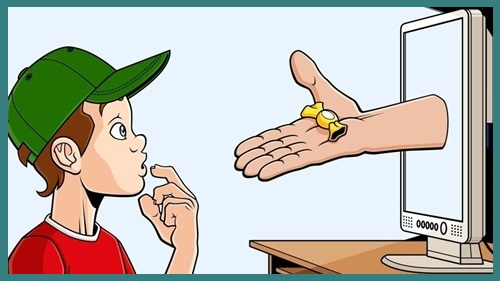

¿Cómo detectar el grooming?
1- La persona acosadora suele crear un perfil falso en redes sociales, aplicaciones, videojuegos multijugador u otro medio social.
2- Se hace pasar por una persona menor de edad para generar confianza y tener una relación de amistad con niños o adolescentes.
3- Luego, la persona acosadora le pide a la víctima fotos o videos con contenido sexual.
4- Cuando lo consigue, chantajea y amenaza al niño o al adolescente con hacer público ese material si no envía nuevas fotos o videos o si no acepta un encuentro personal. La posición de poder en la que se encuentra la persona acosadora se refuerza por su adultez y por la vergüenza que siente el niño o adolescente al enterarse de que se expuso ante alguien más grande que puede hacer público el material privado.
5- Si la persona acosadora logró una relación de confianza, puede que los niños o adolescentes accedan a un encuentro personal.
6- En otras ocasiones, la persona acosadora obtiene fotos o videos sexuales de la víctima sin necesidad de contacto previo, mediante el robo de contraseñas, hackeo de dispositivos o de cuentas. Posteriormente, inicia el período de chantaje.
 


